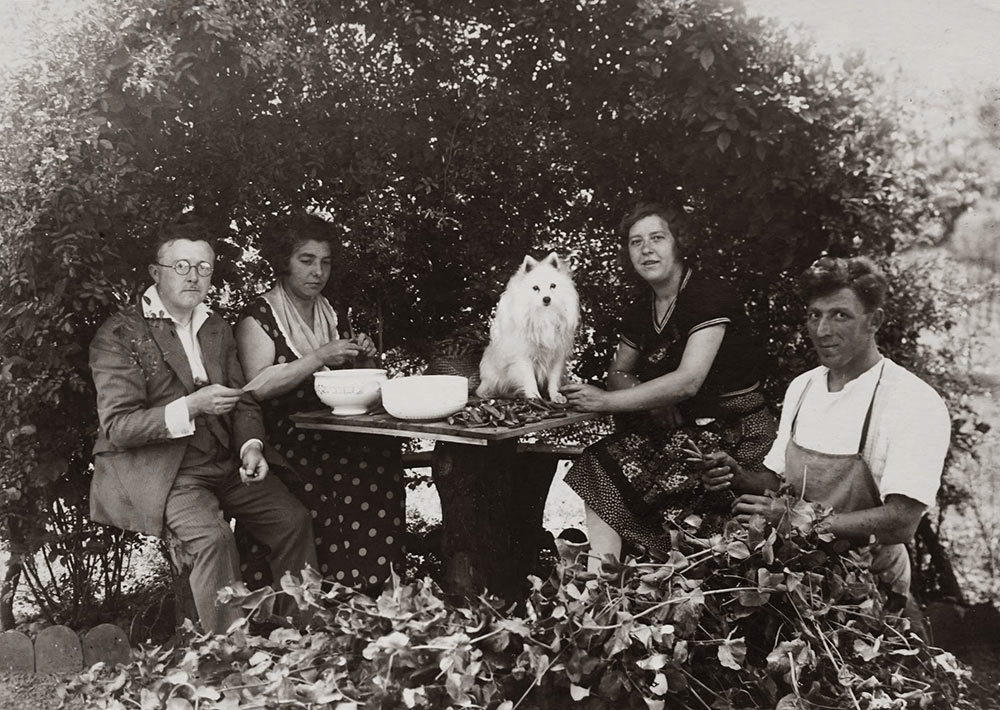

Acerca de nosotros
Nuestra iglesia tiene sus orígenes en un pequeño grupo de estudio bíblico en casa de José Anello hace más de 37 años. El entusiasmo de los hermanos y el fervor de sus oraciones hicieron que el grupo vaya creciendo, por lo que empezaron a organizar pequeñas reuniones en su casa.
A medida que el grupo crecía empezaron a tener necesidad de un lugar más grande para reunirse. Así es que, a través de la donación de un terreno, se hace posible construir un salon para empezar a reunirse. Ese el el nacimiento formal de la Iglesia en calle Jujuy 270
Los años fueron pasando y cada vez más gente llegaba a la iglesia y se unía con entusiasmo a la familia de la fe. Por ello es que decidieron hacer un salón más grande para poder reunir a todas las personas que estaban congregándose.
Se organizaron y entre todos colaboraron para levantar el edificio que hoy conocemos, generando un espacio amplio con todas las comodidades, tanto para la reunión general como para las distintas actividades.
Se contruyeron aulas en el piso superior, que iban a servir para las actividades de los niños y adolescentes, se hizo una cocina amplia y, obviamente, un parrillero grande.
En la actualidad estamos muy contentos de poder volver a la presencialidad plena luego de la pandemia. Hemos incorporado sistema de transmisión en vivo y sonido digital.
Cada vez se abren más grupos pequeños, lo que nos permite poder conocernos más y poder vivir la vida cristiana juntos como familia
Continuamos trabajando en los pilares de nuestra Iglesia, amando a Dios y a las personas que nos rodean, con expectativa de lo que Dios hará en los próximos años.